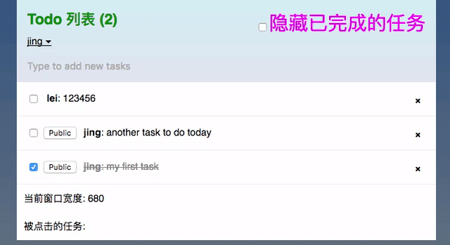

Meteor + React
快速原型开发
Created by 荆雷 in July 2016
http://slides.jinglei.me/talk/20160731Meteor ?
Full-stack JavaScript framework for web & mobile
- One language - JavaScript
- Database on client & server
- Real time on WebSocket
- Reactive - auto update
- Optimistic UI (Latency Compensation / Dead Reackoning)
npm

npm package since Meteor 1.3
Latest News

Meteor 1.4 发布 - July.27
- Node.js 4.4.7 LTS
- MongoDB 3.2.6 - WiredTiger 存储引擎
- 灵活的核心包更新
SQL

Meteor 1.5 on the way - Apollo (GraphQL) => SQL
DB
- MongoDB on server
- MiniMongo on client
- Apollo - SQL
Frontend

React · Angular · Blaze
Blaze
- Simple - Handlebar Style, Easy to Learn
- Limit - Only in Meteor
Angular

- Monolithic - A Complete Framework
- Dirty Check - Performance Issue
- Bidirectional - Two-way binding Could be Complicated
- 2.0 in TypeScript - Serious?
Atwood's Law
Any application that can be written in JavaScript, will eventually be written in JavaScript.
React

- Component - Decoupling / Encapsulation
- Unidirectional Data Flow - Easier to Reason
- Reactivity - Auto Update, Less Code (Schedule)
- Virtual Dom - Performance Improvement
Meteor as FLUX

WebSocket - Real Time

- Full-duplex on a single TCP connection
- Not RESTful HTTP - Pub/Sub pattern
- Meteor DDP
Reactive Programming
reactive source · reactive computation
class App extends Component {
...
}
export default createContainer(() => {
Meteor.subscribe('tasks');
return {
tasks: Tasks.find({}, { sort: { createdAt: -1 } }).fetch(),
incompleteCount: Tasks.find({ checked: { $ne: true } }).count(),
currentUser: Meteor.user(),
};
}, App);
Reactive Programming
Optimistic UI
Latency compensation · Dead reckoning
const insertTask = () => Tasks.insert( newTask )
//Insert data on client & server
if (Meteor.isServer) {
Meteor._sleepForMs(2000) //simulate network delay
insertTask()
}
if (Meteor.isClient) {
insertTask()
}
Optimistic UI
No Optimistic UI
// Insert only on server side
if (Meteor.isServer) {
Meteor._sleepForMs(2000) //simulate network delay
insertTask()
}
// no client side insert stub
No Optimistic UI
Optimistic UI failed
// Failed to insert;
if (Meteor.isServer) {
Meteor._sleepForMs(2000)
// No insert to simulate failure
}
if (Meteor.isClient) {
insertTask()
}
Optimistic UI failed

Thank You
Q&A